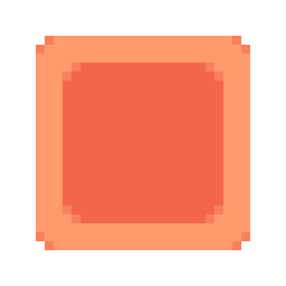

Game Instructions
Select a difficulty level and click 'Begin' to play. Try to click the square within the time limit - if you miss the square, you'll lose a life. The game ends when you run out of lives or time.
A short web game where you click an elusive square.
Select a difficulty level and click 'Begin' to play. Try to click the square within the time limit - if you miss the square, you'll lose a life. The game ends when you run out of lives or time.
Best score: 0